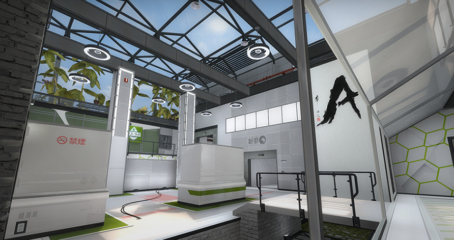
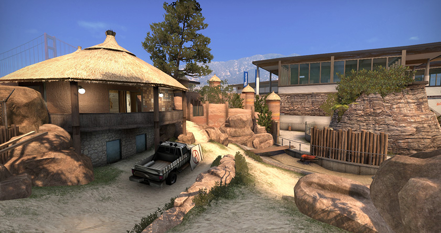
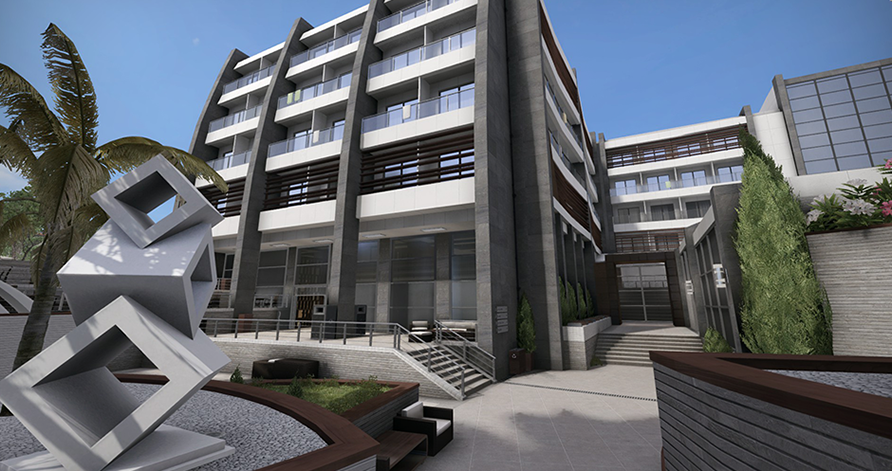
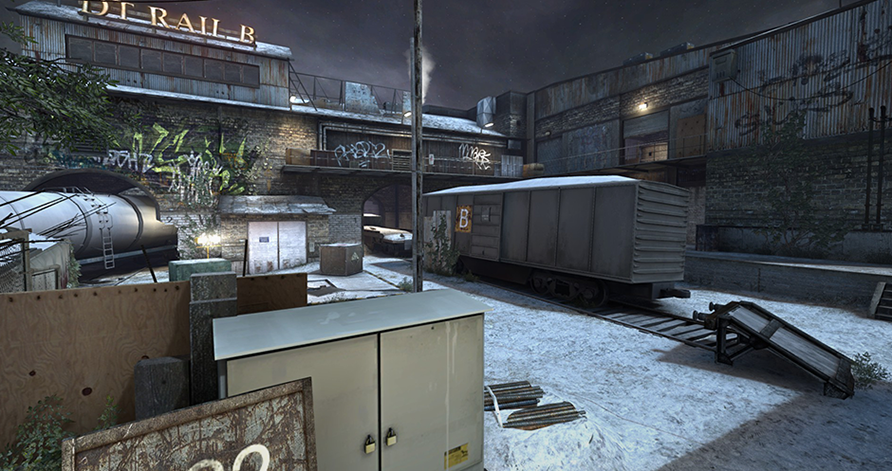
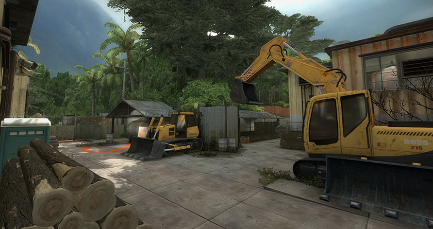

Bomb defusal maps in opperation Bloodhound
Season
Season (de_season) is a community created map featured heavily in professional competitive play since its creation for Counter-Strike: Source. It has since been included as part of Operation Vanguard in Counter-Strike: Global Offensive. On the October 13, 2016 Update, the map was removed from the game files, making Season inaccessible via console. The conflict is occurring within a bio-research facility in Tokyo, Japan. Mount Fuji is visible in the distance in the skybox. The map features clean aesthetics with a significant usage of white and other simple, bright whole colors. The Counter-Terrorist force is the SAS and the Terrorist force is the Phoenix Connexion.
Zoo
Zoo (de_zoo) is an Operation Bloodhound map in Counter-Strike: Global Offensive. The map was added into the game in the January 24, 2019 update along with Abbey. On the May 29, 2019 patch, it was removed from competitive matchmaking. Zoo takes place in 'Bay Area Zoo", located on the San Francisco Bay, with the skyline of San Francisco and the Golden Gate Bridge visible in the distance. Bombsite A is located in an empty African Lion exhibit, while Bombsite B is on the lower level of the HRG Aquarium exhibit.
Resort
The Resort (de_resort) is an Operation Bloodhound map in Counter-Strike: Global Offensive. On the October 13, 2016 Update, the map was removed from the game files, making Resort inaccessible via console. The resort is named "Elysee Resort" in its journal Description on the Operation Bloodhound page and refereed by Chase Turner and Valeria Jenner.
Rails
Rails (de_rails) is an Operation Bloodhound map in Counter-Strike: Global Offensive. On the October 13, 2016 Update, the map was removed from the game files, making Rails inaccessible via console. Rails takes place in Detroit. Rails is the second FBI Bomb Scenario map, who have no Bomb Scenario maps in the base game. Their first map was Seaside.
Log
Log (de_log) is an Operation Bloodhound map in Counter-Strike: Global Offensive. On the October 13, 2016 Update, the map was removed from the game files, making Log inaccessible via console. On workshop page there is screenshot of IDF running,what means IDF was Counter-Terrorists on this map.